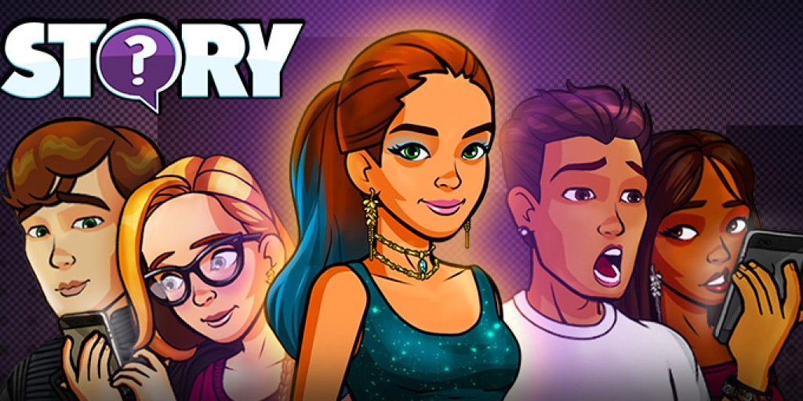
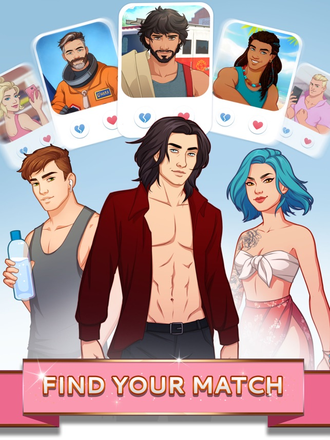

What's Your Story
Summary
| Date | 2019 (four months) |
| Company | Ludia |
| Tech | Unity / C# |
A narrative content-driven choose your own adventure game, available on Android and iOS. My work was mostly centered on Lovelink, a dating-app simulation prototype within What's Your Story.
- Liveops development and post-mortem analysis
- Prototyping new gameplay within the constraints of a live ops game
Liveops development
I joined the team during the last few months of development for What's Your Story. The onboarding was complicated as the codebase had gone through multiple paradigm changes. This was an interesting experience that taught me how hard it can be to navigate big codebases.
After the Lovelink prototype went live, I was involved in the post mortem analysis of the project. My position as a relatively new team member and my experience in software enabled me to point out issues both in the game's architecture and in the development workflow, while proposing potential solutions.
Prototyping Lovelink
The idea for the Lovelink prototype was to integrate a dating app simulation in What's Your Story. We had to reuse as many things as possible from the existing without breaking anything live, while still supporting ongoing content releases for the base game.
While my contribution was limited by my lack of familiarity with Unity, my focus was more on the overall core layer and architecture of the prototype rather than the UI aspect.
Conclusion
While my contribution was limited by my lack of familiarity with Unity, my focus was more on the overall core layer and architecture of the prototype rather than the UI aspect. It was also a good opportunity to familiarise myself with Unity and C# programming at a professional level.